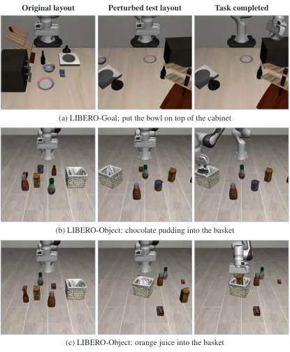
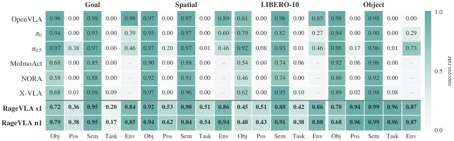

RageVLA：用增强数据与解耦感知把 LIBERO-PRO 从 0.53 推到 0.72
RageVLA: Augmentation-Trained Perception and Action for State-of-the-Art Robustness on LIBERO
一句话：把“东西在哪”做成可置换的显式输入，并用数据重排逼策略必须读它；0.21B 参数在 LIBERO-PRO 拿到 0.72，置换位置输入即失效，是一个干净的因果证据。
LIBERO-PRO total
position shuffle
parameters
作者、单位与技术谱系 · Research context
作者与单位
研究脉络
- CenterNet方法基座关系：agentview 物体头沿用 CenterNet 的 heatmap + sub-cell offset 结构，并额外回归 yaw 与高度[RageVLA 第 IV-B 节]
- DINOv3方法基座关系：冻结的 ViT-B/16 提供密集 patch 特征，两个 adapter 只在其上做轻量预测[RageVLA 第 IV-A 节]
- π0 / π0.5对比基线关系：同为 flow-matching 动作头，但把动作条件建在 VLM token 上；本文用同一 harness 复跑 π0.5 作为唯一自跑基线[RageVLA 第 II、V-D 节]
合作网络
- Amrit Lal Singh — ragento.aiAmrit Lal Singh → ragento.ai关系：署名单位[arXiv 署名页]
- RageVLA — DINOv3RageVLA → DINOv3 (Meta)关系：技术依赖（冻结骨干）[RageVLA 致谢与第 IV-A 节]
- RageVLA — TinyCLIPRageVLA → TinyCLIP-ViT-40M/32关系：技术依赖（图文 embedding）[RageVLA 第 IV-E 节]
作者单位来自论文首页；DINOv3/TinyCLIP 的关系是论文明确写出的技术依赖，不是人员合作；未发现 ragento.ai 与高校实验室的公开隶属证据。
方法本质拆解 · What actually changed
adapter 受监督训练，动作头从头训练
DINOv3 与 TinyCLIP 全部冻结，只有两个 adapter 被训练：物体头用 focal + offset + yaw + 5×高度损失，在 432,592 帧上训练；腕部编码器用类别交叉熵加两级 log-depth L1，训练时的解码器不参与推理。动作侧 35M（s1）/100M（n1）的 DiT 从零训练 23/18 epochs，AdamW + EMA 0.999，不是对 VLM 做微调。
约束在数据重排和输入分解上
数据侧用刚体变换把末端轨迹搬进新物体坐标系，保持夹爪与物体的相对运动，再用任务成功谓词过滤；输入侧强制把“物体在哪”“腕部看到什么”“图像是什么”“指令是什么”分成独立 token 组并做组级 dropout。没有额外的协调损失或物理约束，鲁棒性来自分布覆盖与显式几何输入。
10 步 flow 积分，无测试时优化
每个控制步做一次感知前向（物体 heatmap 峰值 + ray 与水平面求交）和一次 10 步 Euler 积分，执行 20 步 chunk 的前 10 步后重规划。推理没有 3D 重建、没有搜索、没有测试时适配，延迟由网络前向决定（论文只写“毫秒级”，未给具体数值）。
把“东西在哪”从像素记忆改成可置换的显式通道
它改变的是策略获取空间信息的路径：不再要求注意力从图像 token 里隐式恢复布局，而是直接读一份结构化物体列表；训练数据的大幅重排保证这份列表必须被读取才能成功。没有做的是外观增强与真机验证，所以“感知到位”目前只在仿真、已知标定、固定类别集合内成立。
LIBERO 演示 + 五条重排规则 → 冻结 DINOv3 上的两个 adapter 输出物体位置与腕部几何 → 与 TinyCLIP 图像/指令 embedding 一起送入 35M flow-matching DiT → 0.21B 参数在 LIBERO-PRO 拿到 0.72，置换位置输入即失效。

桥接价值Bridge
桥接价值
这篇不是几何后端，但它提供了一个很实用的“因果探针”：推理时只置换一个结构化输入（物体位置列表），图像完全不动，策略成功率从 0.965 掉到 0.215，说明行为确实由这个几何通道决定，而不是靠像素记忆回放轨迹。我们评价融合系统时常用消融后的平均指标，但平均指标无法回答“这个传感器/先验到底有没有被用上”；这种保持其他通道完好的单通道置换，正好补上这一问。第二个价值是把数据增强与输入解耦设计成一对：只有训练分布真的变了，显式位置输入才携带策略必须读取的信息。
方法与模块Method
方法摘要
数据侧用五条通用规则重排 LIBERO 的 130 个任务演示：物体与家具随机位姿、任务移植到其他环境、移植到其他桌面、指令 20 条改写、以及按物体坐标系搬运末端轨迹（T̃=T̃_o(To)⁻¹T_e），每条轨迹重新仿真并只用任务成功谓词过滤，得到 132,610 条训练轨迹 / 2.79M 样本。策略侧冻结 DINOv3 ViT-B/16，两个轻量 adapter 分别输出 agentview 的物体列表（类别、全局位置、yaw、置信度）和 wrist 视图的 8 个几何 token；TinyCLIP 提供 1 个图像与 1 个指令 embedding；35M 参数的 flow-matching DiT 从头训练，10 步 Euler、每 chunk 20 步只执行前 10 步。
可迁移模块
第一是“结构化感知输出 + 分组 dropout”：把物体位置、腕部深度、图像 embedding、指令 embedding 当作独立输入组，训练时每组独立丢弃，系统因此不会把全部权重压在单一通道上；这可以直接搬到多传感器融合的输入层。第二是“单通道置换”因果测试：固定其他输入，只把目标通道换成另一帧/另一个对象的值，观察下游误差是否按预期恶化，用来验证几何通道是否真的在起作用。第三是冻结强骨干 + 轻量 adapter 的分工，避免小规模场景数据把 backbone 过拟合到特定纹理。

证据Evidence
关键证据与数字
LIBERO-PRO 总表：RageVLA s1 0.72（0.21B 参数）对 π0.5 0.53（3.3B），Pos+Task 两列均值 0.55 对 0.11（Table III/IV）。置换物体位置：原始布局 0.965→0.215，交换布局 0.965→0.03，200 episodes、95% 二项半宽 ≤0.07（第 V-D 节）。分级位移：沿 x 28 cm 时 0.865 对 π0.5 的 0.105；35 cm 全 episode 0.445，剔除物理不可达后 0.83（Table VII）。感知精度：held-out 物体召回 99.5%，位置误差中位 0.27 cm，腕部深度误差中位 0.31 cm（Table II）。
边界与下一步Limits & Next Step
边界与风险
作者明确承认：只在 130 个仿真任务上训练与评测，不声称跨分布泛化；物体头只识别 LIBERO 的类别，adapter 依赖仿真标签与已知标定，换真机需要新的标签来源。外观未做增强，这一点直接体现在 LIBERO-10 的 Obj 列只有 0.45；沿 y 轴 28 cm 以上成功率仍掉到约 0.55。评测上，主表基线数字直接取自 leaderboard，只有 π0.5 在 LIBERO-Object 上是同 harness 复跑；结果只报一个训练种子。
下一步实验
在我们的多传感器管线上复刻“单通道置换”：分别把 LiDAR 深度、视觉特征、IMU 预积分替换为相邻帧的值，其余通道保持正确，观察下游位姿误差是否按预期恶化；如果几乎不变，说明该通道实际上没有被使用。再做“冻结骨干 + 轻量几何 adapter”的小样本对照，看它相对端到端微调在标定数据稀缺时的性价比。